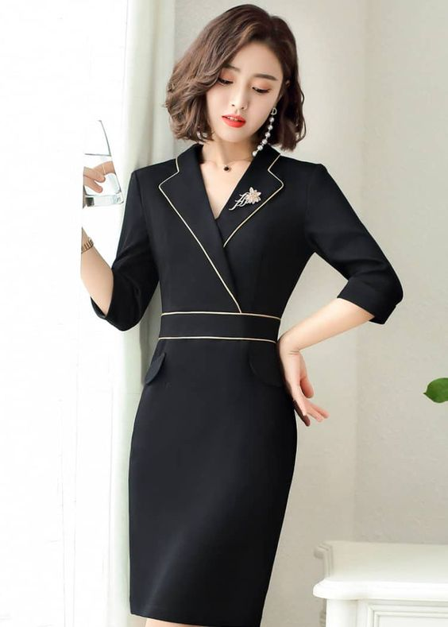

|
 ภาพลักษณ์ที่ดูเป็นผู้ใหญ่ ก็แหม....ใครๆ ก็อยากร่วมงาน กับคนที่เป็น Professional ดูน่าเชื่อถือทั้งนั้นแหละ ดั้งนั้น เราเชื่อว่าต้องมีสาวๆ หลายคนแน่ๆ ที่ปวดหัวกับปัญหาที่ว่าไม่รู้จะแต่งตัวอย่างไรให้ดูดี ดูเป็นผู้ใหญ่ แต่ก๋ต้องดูไม่แก่ด้วย วันนี้เรามี 10 เคล็ด(ไม่)ลับ มาบอกกันจ้าา **************************** สาวซิสคนไหนร่างสูง อยากเพิ่มดีกรีความเรียบร้อยมากขึ้นไปอีก ขอแนะนำเป็นเดรสเข้ารูปลายสก็อตบวกกับแขนยาวและกระโปรงยาว เพิ่มความสวยได้ไม่ยาก ใครที่ขี้เกียจแมทช์ชุดก็หยิบเดรสคอปกสีดำมาใส่ก็ได้ลุคทำงานแบบวัยที่เหมาะสมแล้วค่ะ สวยเนี้ยบ หรูหราด้วยเดรศคอปกผูกเอวสีขาว กับลุคสาวสวยวัยทำงาน ใครต้องไปทำงานย่านหรูหน่อยแล้ว ไม่รู้จะแต่งตัวยังไงดี ลุคนี้เอาอยู่ค่ะ เสื้อแขนผ้าพลิ้วๆ สีดำแขนยาวลายดอกม่วงสลับขาว แมทช์กับกระโปรงยาวสีเทา ผู้ดีสุดๆ ใส่ไปทำงาน ไปประชุมก็ปัง เดรสสั้นลายทางสีขาว แมทช์กับรองเท้าสูงสีทอง และกระเป๋าถือสีทอง ตัวเดียวจบ แต่ดูแพงมากค่ะลุคนี้ สาวหวาน หรือสาวมั่นใส่ก็ดูดีค่า น่ารักๆมุ้งมิ้งเป็นที่สุด กับเสื้อเชิ้ตสีขาวลายจุดดำ กระโปรงทรงดินสอ โทนสีชมพูอ่อน และรองเท้าส้นสูงรัดข้อเท้า ทำให้เราไม่ดูเป็นผู้ใหญ่จนเกินไป แต่ก็ยังเรียบร้อยค่ะ ลุคเรียบง่าย ดูเป็นผู้ใหญ่ สาวออฟฟิศบางคนน่าจะใส่ทุกวัน กับเสื้อแขนยาวสีขาว กระโปรงทรงดินสอสีดำและรองเท้าหุ้มส้นสีดำเรียบๆ แต่เราสามารถ มีลูกเล่นกับกระโปรงได้ เช่น เปลี่ยนเป็นผ้าเลื่อม หรือหนัง แมทช์เสื้อเชิ้ตขาวกับกระโปรงสีกรมและคุทชูหนังสีขาวก็ ได้ลุคเรียบร้อยดูไฮแล้วค่ะ แต่งตัวแบบเบาสบาย ด้วยผ้าชีฟองและโทนสีขาว สีทอง และสีในโซนแพงโทนทั้งหมด เมื่อนำมามิกซ์กันแล้วก็ดูดี ดูหรู ให้ลุคคุณหนูที่มีระดับเลยที่เดียว เลือกเสื้อเชิ้ตกับกระโปรงยาวทรงกระดิ่งสีเรียบและรองเท้าคัทชูก็ทำ ให้ดูเรียบร้อยเหมาะกับวัยกันค่ะ
|
|
|---|